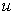
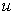
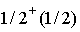
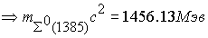

|
В. И. ЕЛИСЕЕВ ВВЕДЕНИЕ В МЕТОДЫ ТЕОРИИ
ФУНКЦИЙ ПРОСТРАНСТВЕННОГО КОМПЛЕКСНОГО ПЕРЕМЕННОГО |
|
Продолжение 3 из 3. 8.8 Сумма единичных глюонных вихрей с весовыми коэффициентами определяет структуру поля микрочастицы.
Обобщая вычисления, сформулируем правило 1 для определения спина и изоспина не странных микрочастицы. 1. Изоспин микрочастицы определяется тем количеством весовых коэффициентов электрического глюонного поля исходных кварков (по абсолютной величине), которое составляет суммарный весовой коэффициент электрического поля микрочастицы (также рассматривается абсолютная величина). Спин микрочастицы равен количеству весовых коэффициентов лептоного поля, которое укладывается в абсолютное значение суммарного весового лептонного коэффициента микрочастицы. В принципе правила сводятся к делению весовых коэффициентов электрического и лептонного поля на весовые (соответствующие)коэффициенты исходных кварков, участвующих в композиции микрочастицы.
Кварковая композиция
дает резонанс . Квантовые числа . Глюонное поле для этой композиции определим с поворотом лептонной составляющей в двух и трех кварках и соответственно получим.. .
.
Расхождение с экспериментальными значениями составляет для первого случая 3,7 %, для второго 19 %. Квантовые числа вычисляются по введенному правилу и равны для первого случая
Таким образом, рассмотрены квантовые числа частиц и резонансов, имеющих заряд странности
. Вычисления дают зависимость массы частицы от весовых коэффициентов лептонного поля. Резонансы представляют мультиплет с одинаковыми квантовыми числами В вычислениях масс резонансов проявилась также зависимость массы от разности в весовых коэффициентах электрического и лептонного поля в исходных кваркахДалее проведем вычисления для барионов с зарядом странности
. Это микрочастицы, которые содержат в своей композиции кварк . Заряд странности (по введенной нами классификации) определяется скомпенсированными электрическим и лептонным полем в кварковой композицииКварковая композиция
Глюонное поле этой композиции состоит из трех кварков
(произведено два поворота лептонного поля в кварках  ). Спин равен 1/2. Изоспин равен 1/2. (происходит вычетание глюонных полей согласно диаграмме) Массы соответственно равны
). Спин равен 1/2. Изоспин равен 1/2. (происходит вычетание глюонных полей согласно диаграмме) Массы соответственно равны
Мэв. Расхождение составляет 5,3 %. Спин равен 3/2. Изоспин 1/2.
. Мэв. Расхождение составляет 3,6 %.
Можно рассмотреть другие варианты глюонного поля. Поворот лептонного поля в кварке  и поворот электрического поля в кварке  дает
и поворот электрического поля в кварке  дает
Квантовые числа равны
. Вычисление массы дает величину Мэв. Расхождение составляет 1,4 %. Таким образом, к правилу 1 добавляется уточнение для странных частиц. К значению изоспина, определенному по правилу 1, необходимо прибавить , где S -величина странного заряда.Далее рассмотрим кварковую композицию

В соответствии с правилом 1 имеем квантовые числа
Изоспин для всех частиц по правилу один равен 1/2. Однако учитывая дополнение к правилу один получаем для всех микрочастиц изоспин равный 1.С кварковой композицией
Глюонные поля имеют аналогичное построение
Расхождение по массам составляет 2,6 % и 1,6 %.
Квантовые числа равны соответственно с учетом введенных правил
.Квареовых композиций с двумя зарядами странности (то есть они содержат два кварка
S) две . Соответственно имеем по две частицы в каждой композиции.Глюонные поля этих микрочастиц образованы поворотом электрического лептонного поля в двух кварках и дополнительно поворотами лептонных полей в двух или трех кварках.
Глюонные поля соответственно равны
Расходимость по массе составляет для каждой частицы, 3,2 %, 3,9 %. 2,45
%. Все микрочастицы имеют отрицательные электрические составляющие глюонного поля, поэтому изоспин по правилу 1 имеет отрицательное значение -1/2 плюс составляющая изоспина по дополнению к правилу равная . Таким образом, изоспин равен 1/2. Спин определяется по первому правилу. Для первой и третьей частицы он равенКварковая композиция с тремя зарядами странности
Композиция состоит из 3-х кварков
d и трех композиций .
.
Имеем глюонное поле как сумму кварковых глюонных полей
Однако глюонное поле микрочастицы образовано в результате поворота электрического и лептонных полей и будет иметь вид
Это поле дает массу
. Расхождение составляет 3,3 %.Спин равен
Рассмотрим резонансы с зарядом очарование. Заряд обусловлен наличием в кварковой композиции очарованного кварка С. По модельной системе кварк
.Микрочастица
имеет кварковую композицию , которая дает глюонное поле. Вычисление массы дает величину
. Расхождение составляет 2 %. Спин частицы равен 1/2. Изоспин равен 1/2 плюс . Изоспин равен  . Отличается от экспериментального равного 0.
. Отличается от экспериментального равного 0.
Далее
Расхождение составляет 1,7 %.
Квантовые числа соответствуют экспериментальным
Расхождение составляет 1,3 %.
Квантовые числа микрочастицы соответствуют экспериментальным
Далее рассмотрим по разработанной методике частицу с зарядом прелесть
Расхождение 1,3
%.Спин и изоспин вычисляются по ранее обнаруженным закономерностям
Мини оглавление:
[0], [1.1.1, 1.1.2, 1.1.3, 1.1.4, 1.1.5, 1.1.6, 1.1.7, 1.1.8, 1.2, 1.2.1, 1.2.2, 1.2.2.a, 1.2.2.b, 1.2.2.c, 1.2.2.d, 1.2.2.e, 1.2.2.f, 1.2.2.g, 1.2.2.h, 1.2.3, 1.3.1, 1.3.2, 1.3.3, 1.3.4, 1.3.5, 1.3.6, 1.4.1, 1.4.2, 1.5, 1.6, 1.7.1, 1.7.2, 1.7.3.1, 1.7.3.2, 1.7.3.3, 1.7.4.1, 1.7.4.2, 1.8.1], [2.1, 2.2],[3.1, 3.2, 3.3, 3.4.1, 3.4.2, 3.4.3, 3.4.4, 3.4.5],[4.1, 4.2, 4.3, 4.4],[5.1, 5.1.Рис.52, 5.2, 5.3, 5.4, 5.4.Т1, 5.4.Т2, 5.4.Т3, 5.5.1, 5.5.2, 5.5.3, 5.5.4],[6.1.1, 6.1.2, 6.2.1, 6.2.2, 6.2.3, 6.2.4, 6.2.5, 6.3, 6.4.1, 6.4.2, 6.5.1, 6.5.2],[7.1, 7.2, 7.3, 7.4, 7.5, 7.6, 7.7.1, 7.7.2, 7.8.1, 7.8.2, 7.8.3, 7.9],[8.1, 8.2.1, 8.2.2, 8.3, 8.4, 8.5, 8.6, 8.6.T1, 8.7, 8.8.1, 8.8.2, 8.8.3, 8.9.1, 8.9.2, 8.9.3, 8.10, 8.10.T2, 8.10.T3],[9.1, 9.2, 9.3, Рис.88, 89, 90, 91, 92, 93, 94, 95, 96, 97, 98, 99, 100],[10.1, 10.2, 10.3, 10.4, 10.5, 10.6, 10.7, 10.8, 10.9, 10.10, 10.11, 10.12, 10.13, 10.14, 10.15.1, 10.15.2, 10.16.1, 10.16.2, 10.17, 10.18],[11]
Размещенный материал является электронной версией книги: © В.И.Елисеев, "Введение в методы теории функций пространственного комплексного переменного", изданной Центром научно-технического творчества молодежи Алгоритм. - М.:, НИАТ. - 1990. Шифр Д7-90/83308. в каталоге Государственной публичной научно-технической библиотеки. Сайт действует с 10 августа 1998.
E-mail: mathsru@gmail.com